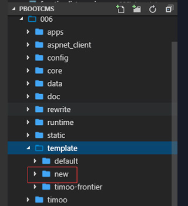
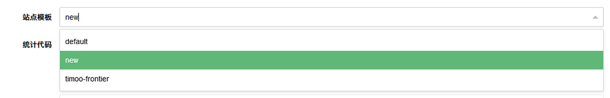
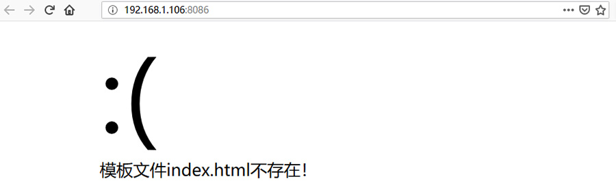
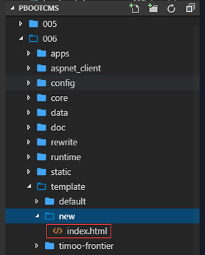
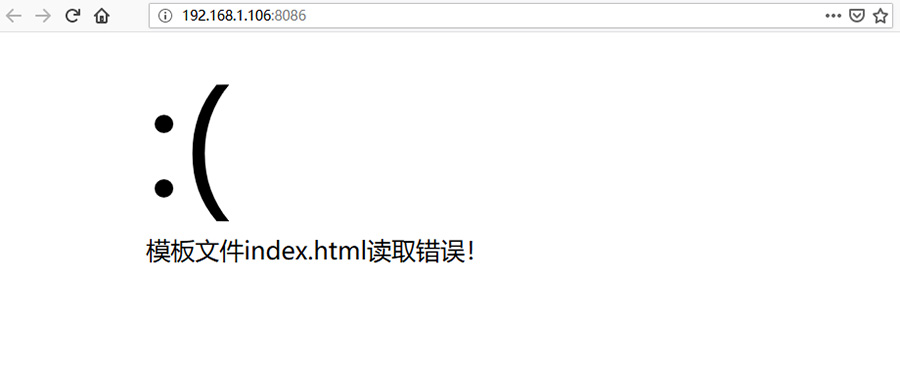
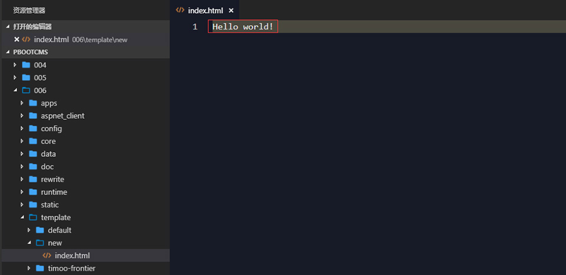
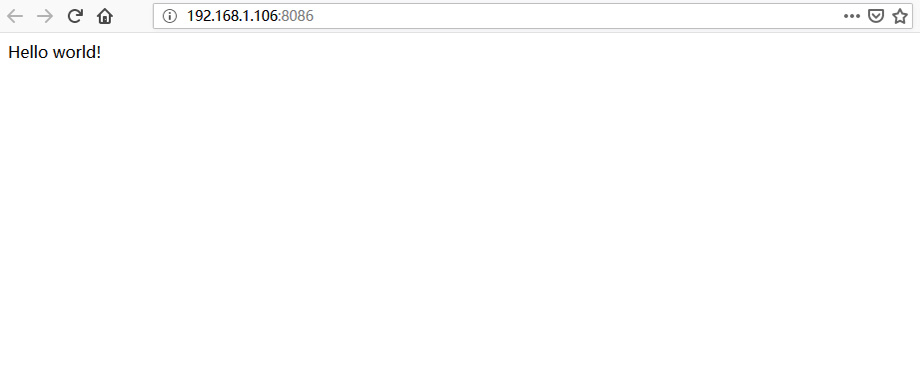

学习程序，一定要多动手，多思考。
由于本系列是模板制作教程，因此不会涉及一些基础的HTML以及CSS这些知识的详解，大家需要自行去了解。
在了解PbootCMS的模型概念和拥有一定的基础知识之后，就可以开始动手制作模板了。
一、创建模板目录
在template目录下，新建模板目录，命名随意。（例如：new）

二、选择模板目录
在PbootCMS后台 -- 基础内容 -- 站点信息 -- 站点模板中选择刚才新建的new。

清理一下缓存，看一下前端。

发现错误提示，模板文件不存在。那是当然的，因为我们只是新建了一个目录而已，里面什么都没有。
三、创建模板文件
接下来要做的就是在模板目录里面创建模板文件了。这里可以写一个页面创建一个模板文件，也可以统筹规划好有哪些页面，然后把用到的模板文件都一起创建了。（前期教程只做演示，因此之创建一个index.html。后期如果有时间，可以一边写模板一边更新教程，做一个实例教程。）

刷新一下前端页面看看。

还是一个错误，仔细看一下，原来的“不存在”变成“读取错误”了，那是因为只是建了个文件，文件里面还是空的，什么都没有。
四、写个Hello world!

刷新页面，看看Hello world！吧。

五、建立资源文件夹
比较简单，在模板目录下分别建立存放css文件的css目录，存放js文件的js目录，存放图片的img目录。
当然，你也可以把这些文件都直接扔在模板目录里面，或者放到其他地方，只要能引用过来就可以。如果你忍受得了，或者喜欢这种混乱的方式的话。
接下来，模板的制作就是 HTML+CSS+JS+PbootCMS标签调用 的事情了。